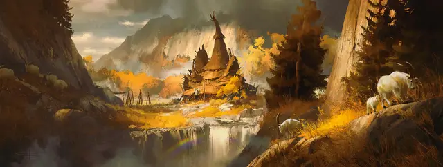

Отшельник
Hermit

Вы значительную часть своей жизни прожили в уединении — либо в закрытой общине, такой как монастырь, либо вообще в одиночестве. Вдали от шумного общества вы нашли тишину, спокойствие, а возможно, и ответы на важные вопросы.
Владение навыками: Медицина, Религия.
Владение инструментами: Набор травника.
Языки: Один на ваш выбор
Снаряжение: Контейнер для свитков, битком набитый вашими молитвами и изысканиями, тёплое одеяло, комплект обычной одежды, набор травника, 5 зм
Жизнь в уединении
Почему вы жили в изоляции, и из-за чего вы прервали своё уединение? Придумайте вместе с Мастером точную природу вашего уединения, либо определите её по таблице, случайным образом.
| к8 | Жизнь в уединении |
| 1 | Я искал духовное просветление. |
| 2 | Я жил в общине согласно предписаниям моей веры. |
| 3 | Я был изгнан за преступление, которого не совершал. |
| 4 | Я покинул общество после события, изменившего мою жизнь. |
| 5 | Мне нужно было тихое место для работы над картиной, книгой, музыкой или манифестом. |
| 6 | Мне нужна была община, близкая к природе, вдали от цивилизации. |
| 7 | Я был смотрителем древних руин или реликвии. |
| 8 | Я был пилигримом, ищущим существо, место или реликвию. |
Умение: откровение
Тихое уединение в долгом отшельничестве дало вам доступ к великому откровению. Точная природа этого откровения зависит от характера вашего уединения. Это может быть истина о вселенной, божествах, влиятельных созданиях на внешних планах, или силах природы. Это может быть место, которое никто и никогда не видел. Вы могли обнаружить что-то, что давно было забыто, или найти реликвию прошлого, способную переписать историю. Это может быть информация, которая может причинить вред тем, кто изгнал вас, и тем самым ставшая причиной возвращения в общество.
Придумайте вместе с Мастером детали вашего откровения и его влияние на кампанию.
Персонализация
Некоторым отшельникам комфортно живётся в уединении, а другие жаждут вернуться в общество. Как бы вы ни относились к одиночеству, такая жизнь повлияла на вашу жизненную позицию и идеалы. Некоторые даже сходят с ума от долгих лет вдали от общества.
| к8 | Черта характера |
| 1 | Я так много прожил в изоляции, что редко говорю, предпочитая жесты и редкое мычание. |
| 2 | Я абсолютно безмятежен, даже в самых ужасных ситуациях. |
| 3 | У лидера моей общины были высказывания для любой ситуации, и я стремлюсь поделиться этой мудростью. |
| 4 | Я ужасно сопереживаю всем, кто страдает. |
| 5 | Мне чужд этикет и общественные ожидания. |
| 6 | Я связываю всё, что происходит со мной, с грандиозным замыслом космического масштаба. |
| 7 | Я часто погружаюсь в свои мысли, отвлекаясь от окружения. |
| 8 | Я работаю над великой философской теорией и люблю тех, кто разделяет мои идеи. |
| к6 | Идеал |
| 1 | Всеобщее благо. Мои дары предназначены для всех, я не должен использовать их в одиночку. (Добрый) |
| 2 | Логика. Эмоции не должны затмевать наше видение того, что истинно и справедливо, а также наше логическое мышление. (Законный) |
| 3 | Свободомыслие. Изыскания и любопытство — столпы прогресса. (Хаотичный) |
| 4 | Сила. Уединение и созерцание — путь к мистической и магической силе. (Злой) |
| 5 | Сам живи и другим не мешай. Вмешиваясь в дела других, причиняешь одни лишь проблемы. (Нейтральный) |
| 6 | Самопознание. Познаешь себя — познаешь всё вокруг. (Любое) |
| к6 | Привязанность |
| 1 | Самое важное для меня — это другие отшельники, жившие рядом, или мой орден. |
| 2 | Я уединился, чтобы спрятаться от тех, кто мог охотиться за мной. Когда-нибудь я сам брошу им вызов. |
| 3 | Я всё еще ищу просветление, которого не достиг в уединении, но оно по-прежнему ускользает от меня. |
| 4 | Я уединился, потому что влюбился в ту, с кем мне не суждено жить. |
| 5 | Если моё откровение сбудется, мир будет обречён на гибель. |
| 6 | Моя изоляция позволила познать великое зло, уничтожить которое могу один лишь я. |
| к6 | Слабость |
| 1 | Теперь, вернувшись в мир, я слишком сильно увлекаюсь его радостями. |
| 2 | Я скрываю тёмные, кровожадные мысли, не ушедшие ни после изоляции, ни после медитаций. |
| 3 | Я категоричен в мыслях и подходе к жизни. |
| 4 | Я позволяю жажде победить в споре становиться сильнее дружбы и гармонии. |
| 5 | Я слишком сильно рискую, стремясь найти утраченные частички знаний. |
| 6 | Мне нравится хранить тайны, и я ими ни с кем не делюсь. |
Другие отшельники
Эта предыстория подразумевает созерцательное уединение в учениях и молитве. Если вы хотите играть жителем суровой дикой местности, избегающим других существ, попробуйте взять предысторию чужеземца. С другой стороны, если вам нужна более религиозная направленность, можете взять предысторию прислужника. Вы можете даже быть шарлатаном, выдающим себя за мудреца и святого, и дурачащим набожных глупцов.